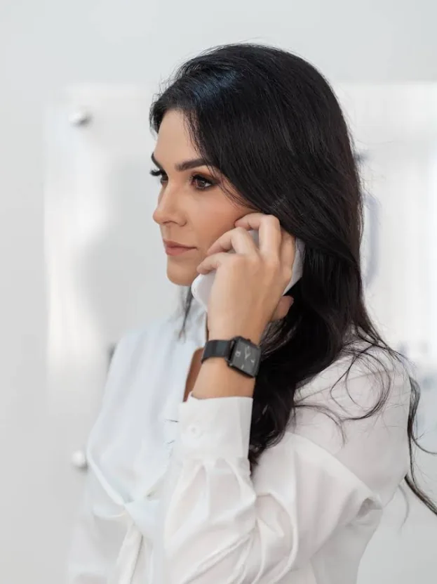

Atuação próxima, estratégica e humana em divórcio, guarda, pensão alimentícia, união estável e sucessões — para você atravessar esse momento com clareza e segurança jurídica.
A Dra. Jéssica Julião atua com dedicação exclusiva ao Direito de Família, acompanhando cada cliente com escuta atenta e orientação clara sobre os caminhos possíveis. Atendimento em Bauru, Piratininga e também online, para quem precisa de suporte jurídico onde estiver.
Condução consensual ou litigiosa, com foco em resolver com o menor desgaste possível para você e sua família.
Definição de guarda, regime de convivência e questões relacionadas ao bem-estar dos filhos.
Fixação, revisão e execução de pensão alimentícia, com atuação tanto para quem pede quanto para quem responde.
Reconhecimento, dissolução e contratos de união estável, com segurança jurídica para o casal.
Condução de inventários judiciais e extrajudiciais e partilha de bens entre herdeiros.
Orientação preventiva para organizar o patrimônio da família e evitar conflitos futuros.

Advogada de Família
303 avaliações reais de clientes atendidos
Ver avaliações no GoogleEm observância ao Código de Ética e Disciplina da OAB e ao Provimento nº 205/2021, os relatos individuais de clientes não são reproduzidos neste site. As avaliações podem ser consultadas diretamente no Google.
Envie uma mensagem pelo WhatsApp. A Dra. Jéssica retorna o contato para entender sua necessidade e orientar os próximos passos.
Fale conosco ↗